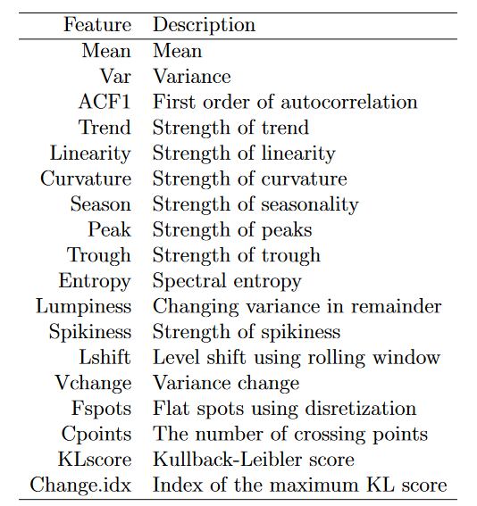
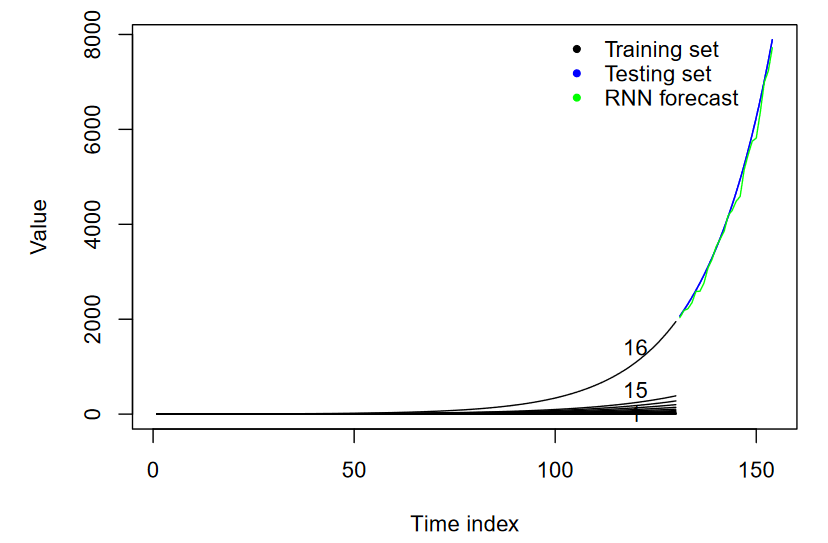
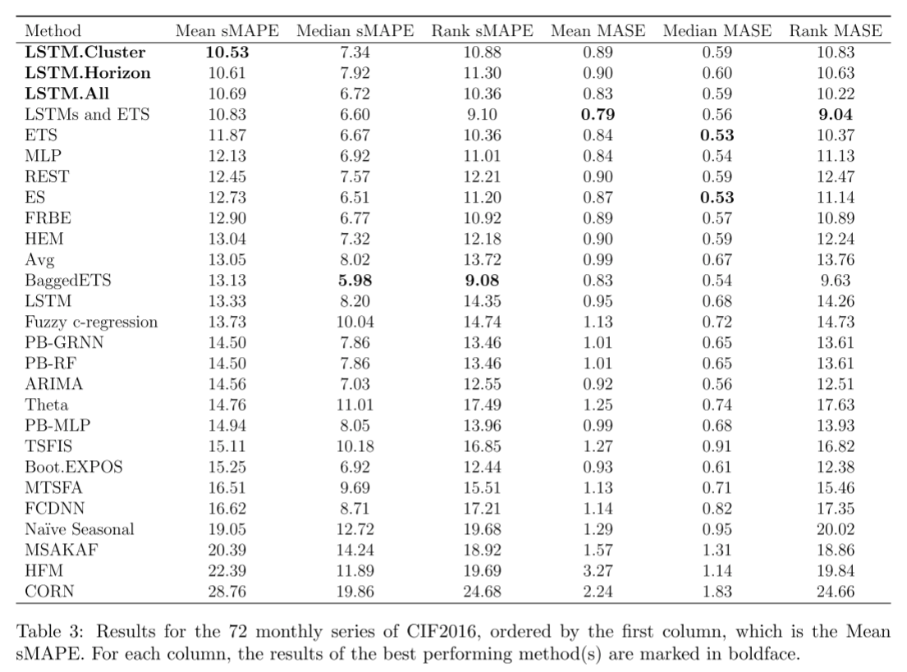

Paper | Forecasting across time series databases using recurrent neural networks on groups of similar series: A clustering approach
参考文献
- 特征提取：特征抽取 | 机器之心 (jiqizhixin.com)
- Deseasonalize：Comprehensive Guide To Deseasonalizing Time Series (analyticsindiamag.com)
- 最小讯息长度：Minimum message length - Wikipedia
- Statistical Significance：A Refresher on Statistical Significance (hbr.org)
- 他山之石：「论文导读」“物以类聚，相互学习”先将相似时间序列聚类，再利用 RNN 对多序列同时预测，效果更棒 - 知乎 (zhihu.com)
阅读
要解决的问题
This is mainly because traditional univariate forecasting techniques treat each time series separately, and forecast each series in isolation. Therefore, forecasting time series in these domains with traditional univariate forecasting procedures leaves great potential for producing more accurate forecasts untapped, as a separate model is built for each time series, and no information from other series is taken into account.
When building such global models for a time series database, now the problem arises that
these global models are potentially trained across disparate series, which may be detrimental to the overall accuracy.
关于时间序列预测，传统的单变量预测方法【ARMIMA，ETS等】没有考虑到各个时间序列之间的相关性，对每个序列分别建立模型预测，因此在预测准确性上表现不佳。
为了利用不同时间序列之间的相似性，有人针对所有的时间序列数据，建立一个全局的预测模型【RNN，LSTM等】，并进行预测。但是这些全局模型的训练数据是所有的时间序列，这可能会降低预测精度。
怎么解决
对时间序列数据进行 clustering，然后针对每一组时间序列的 cluster 单独建立模型进行预测。
为此作者提出了一种基于 LSTM 并结合了时间序列聚类的预测框架。该框架具体实现如下：
-
特征提取与选择【根据目前的特征集创建新的特征子集，并从中挑选具有代表性的特征】
 -
利用 SNOB【基于特征】 对时间序列数据进行聚类
Following the MML strategy, Snob evaluates different cluster assignments by calculating
the total message length, which is the objective function to be minimized in each iteration.Snob 是通过优化 MML 中的总消息长度，来获得最优的 clustering 方案。
-
对每一个 cluster 进行数据预处理，生成训练集
-
稳定方差
-
Why？因为平稳时间序列【只有数据平稳，才能产生大量稳定的数据用于训练】的前提是方差稳定，所以为了后续的 Deseasonalize 和 Modelling Trend，需要稳定方差。
-
采用 转换
-
-
使用 STL 函数将所有的时间序列分解为 trend，seasonal part，remainder
-
Why？对时间序列数据 deseasonalize 可以提高预测精度
-
In line with the discussions above, best practice would then be to fit both a model with and without deseasonalization, and then choose the better of the two models using a validation set.
根据讨论，Deseasonalize 其实是可选的步骤。有时候时间序列中的 Seasonality 是比较固定的，那么不 Deseasonalize 可能会取得更好的性能。
-
-
对 trend + remainder【去除了 seasonal part】，利用带局部归一化的滑动窗口方法，产生训练集
-
运用滑动窗口方法将一个长度为 tsLength 的时间序列，转换为**（tsLength - outputSize - inputSize）个长度为（outputSize + inputSize）**的小序列。保留最后一个窗口，用作验证集
-
outputSize 表示希望预测的范围，inputSize 表示输入窗口的长度，【1.25的选择是一种经验的体现】
-
局部归一化：让滑动窗口内的每一个值减去滑动窗口中的最后一个值，这样做可以有效地对大幅度的变化趋势进行拟合。
平稳的时间序列，即去季节化和去趋势化后的时间序列有利于提高预测精度。本文去了季节化，但是没有去趋势化，所以需要对趋势进行拟合
-
-
-
根据生成的训练集，对每一个 cluster 利用单独的 LSTM【peephole connection，公式如下】 进行训练，并进行预测【在 LSTM 后面接一个全连接层，将 LSTM 的输出维度转换为预测范围的维度】
-
对预测结果进行 denormalization process【因为稳定方差和局部归一化的时候对数据尺度进行了变换，这一步就需要还原】 和 reseasonalization process【在生成的预测中引入最后的季节性成分】。框架的整体结构如下
实验
在 CIF2016 数据集上，对方法进行对比评估。
两个评价指标：
Here, Yt denotes the observation at time t, Ft is the respective forecast. Furthermore, h denotes the number of data points in the test set and n denotes the number of data points in the training set of a time series. The seasonal period of a time series is represented by M.
试验了3种 LSTM 模型：
- LSTM.ALL：普通的 LSTM，不对数据进行聚类，是一个全局模型
- LSTM.Cluster：本文提出的方法
- LSTM.Horizon：与本文提出方法的差别仅在于它根据要预测的范围进行聚类
在 CIF2016 数据集上，利用原始的竞赛设置，这样可以和竞赛的其他算法进行比较，取得如下的结果
关于为什么在有些评价指标上，本文提出的方法并没有取得优势，主要解释如下：
This can be attributed to the peculiarities of the CIF2016 dataset. The dataset contains 48 artificially generated time series that may not contain useful cross-series information.
总结
这篇论文，先是将众多时间序列进行聚类，再对每一个类别的所有序列，构建基于 LSTM 的 Global 模型进行预测。结果发现先聚类，可以减少异质性给 Global 模型带来的负面影响，而使用 Global 模型可以增加训练数据、利用相似序列的信息，共同使用使得预测效果更好。